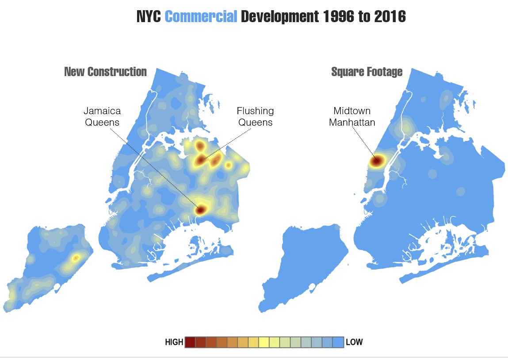
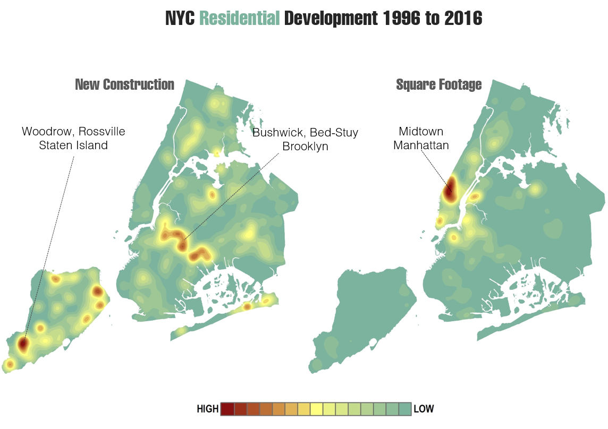
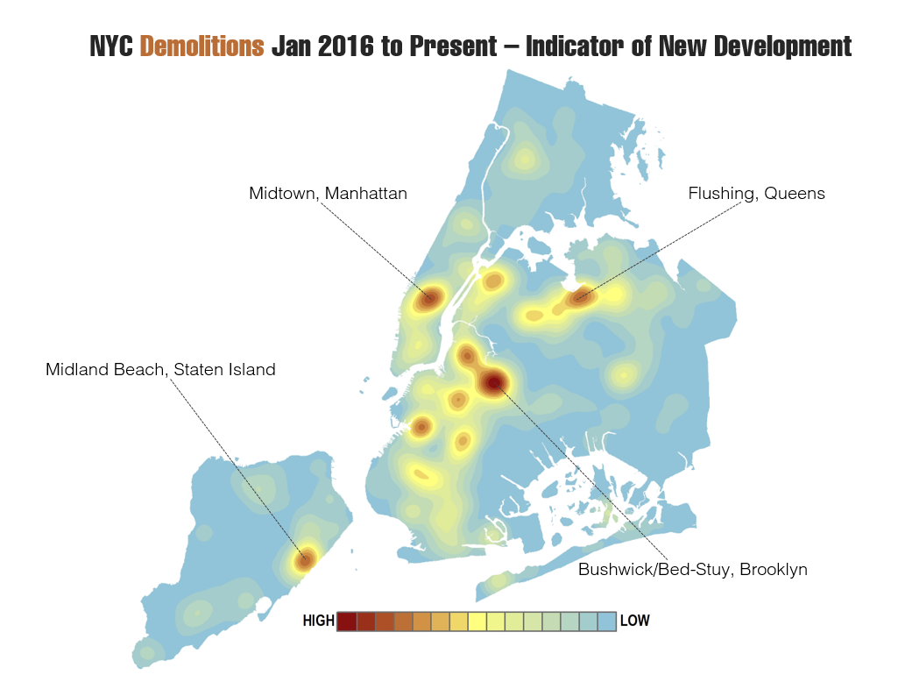
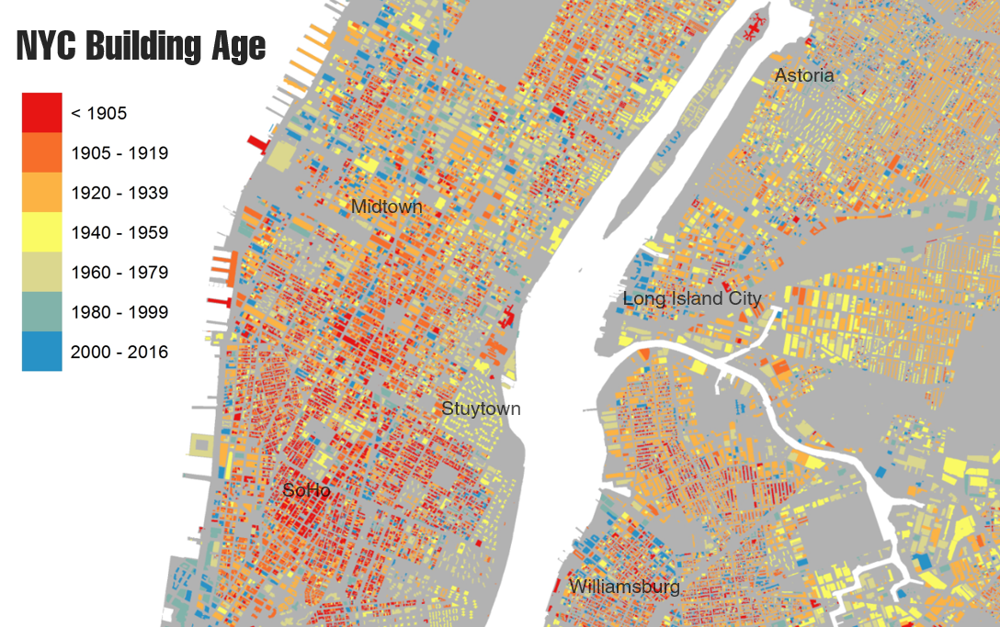
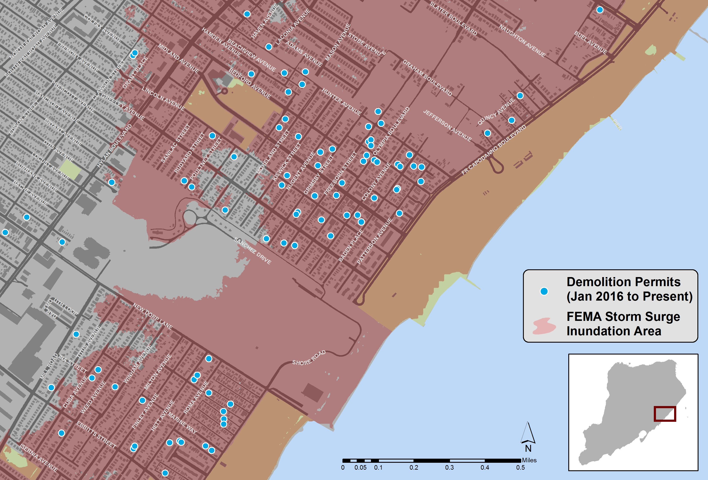

Using Analytics and GIS mapping on Buildings (and other) data to better understand the landscape of development throughout NYC
DOB has huge volumes of new and historical data:
- Building construction – Job filings / Permits
- Inspections
- Safety & Compliance
Using modern analytics tools and methods to help transform Buildings data into operational insights:
- Track and monitor trends in development
- Analyze spatial patterns and relationships
- Predictive risk modeling
- Visualizing complex patterns
- Improving information flow
New Buildings
Square Footage
Demolitions
Merging with external datasets to provide more powerful insights
NYS DOL Construction Employment data
Building Age
Flood Hazard Area data from FEMA

Building Class
External reporting and OpenData
- Many critical datasets such as filings, permits, etc are available to the public through the OpenData API
The public as well as various companies (SiteCompi, Urbint, etc) use these data sources for application development
External Reporting – DOB is being more proactive in releasing its analysis for public consumption